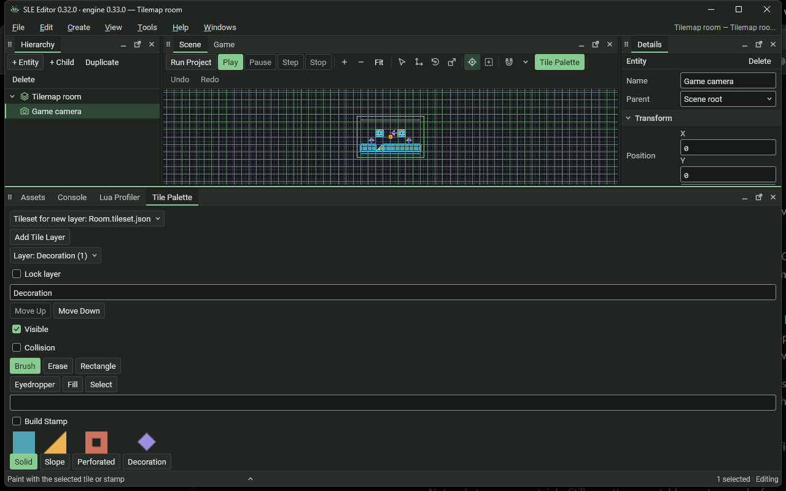

Tilemaps
Use native tile layers for editable project tilemaps. The Tilemap Room walkthrough provides the image, tileset, scene and project used below.
Open or build a room
Tilemap Room
Open examples/tilemap_room/Room.sleproject, then Room.scene.json from Assets. The room has solid, sloped and perforated terrain and a separate decoration layer. Use Play to see the startup camera’s view.
Add grid regions
Import Room.png, set Texture filter to Nearest and open the spritesheet dialog. In Grid mode enter cell size 16 × 16, margins 0 × 0 and spacing 0 × 0. Add grid regions creates Slice 1–4, in order Solid, Slope, Perforated and Decoration.
Save region
For a single custom slice, select its pixel bounds in the spritesheet dialog and use Save region. Use the saved region ID to reference it from a sprite or tileset entry.
Create a tileset
Select the imported image and click New Tileset… in its details, or click New Tileset… in the Assets toolbar and choose an image. In the slicer’s Grid mode, set the cell size, margins and spacing, then click Create Tileset…. The editor adds missing grid regions, saves a version 2 <image>.tileset.json next to the image, and opens the Tileset Editor. It can also open existing version 1 tilesets. See the native scene and tileset formats.
Tileset Editor
Double-click a tileset in Assets or choose Open Tileset Editor… in its details. Zoom in on the atlas, click a tile or drag to select a rectangle. Edit the selection’s name. Enter tags as a comma-separated list or a JSON string array, and enter custom properties as a JSON object with string, number or boolean values. The Tags field displays applied tags as a JSON array. Click Apply metadata to stage those changes for every selected tile. Use the Windows menu to focus, detach or move the Tileset Editor.
Reslice a tileset
Adjust the grid’s tile size, margin and spacing, then choose Reslice. Tiles at matching grid positions keep their UUIDs and metadata. Use Add tile… to add an existing spritesheet region. Remove tiles… removes the selected tiles and can leave missing UUIDs in scenes that use them.
Tile Palette
Choose Create → Tilemap → New Tilemap… and save the map beneath Assets. The same entry is in the Scene view and Hierarchy context menus. The editor creates a placing entity, selects the Tiles tool and opens the Tile Palette beside Details. Use Place Existing Tilemap… to reuse a map in this or another scene. Every placement edits the same shared asset. Choose a tile in the palette; its layer, paint mode and clipboard controls work in map-local coordinates.

Tiles Tool
Use Tools → Tiles Tool, the Tiles icon next to the Scene tools, or press T with Scene or Hierarchy focused in an editable project scene. Each of these also opens the Tile Palette.
Tile layers
To add another layer, select the map entity, choose a tileset in the palette and click Add Tile Layer. Use Add Tileset to include another tileset in the same map; its qualified tiles can be painted on the same layer. Paint terrain on one layer and add a second layer for decoration with Collision cleared. Only the map entity moves: every layer starts at (0, 0) relative to it. Use the entity’s Transform position or Move tool; rotation and scale are locked. Use the visibility and lock controls to hide or protect a layer, and use Move Up or Move Down to change draw order.
Paint and edit
Tile Brush
With the Tiles tool active and Scene focused, press 1 or choose Brush. Click or drag on an editable layer with a tile or stamp selected.
Tile Erase
Press 2 or choose Erase. Drag across cells on the active editable layer to clear them.
Tile Rectangle
Press 3 or choose Rectangle. Drag across a rectangle to paint it with the selected tile.
Tile Eyedropper
Press 4 or choose Eyedropper. Click a painted cell to pick its tile from the active layer.
Tile Fill
Press 5 or choose Fill. Click a cell to replace connected matching cells within the active selection or layer bounds. Select a finite area before filling empty cells.
Tile Select
Press 6 or choose Select. Drag a rectangle to select cells on the active layer. Drag from inside the selection to move its tiles.
Copy Tiles
With a selection on the active layer, click Copy in the palette or use Ctrl+C in the focused Scene viewport to capture the selected pattern for pasting or stamping.
Paste Tiles
With a copied pattern and a compatible, visible, unlocked layer, click Paste in the palette or use Ctrl+V in Scene. Point at the destination cell before pasting. If the cursor has no cell, paste uses the active selection’s minimum cell.
Search tiles
Enter part of a tile name in the Tile Palette to narrow the tiles shown for the current layer.
Build Stamp
Enable Build Stamp and click up to eight palette tiles in left-to-right order. Brush paints the resulting row as a pattern.
Use Copied Stamp
Copy a selection with painted cells and click Use Copied Stamp on a layer using the same tileset. Brush paints the copied pattern.
Clear Selection
Click Clear Selection in the palette to dismiss the active layer’s cell selection.
Save, reopen, and export a tile scene
Undo and redo a stroke, save the scene and reopen it to check the cells and layers. Scene Save also saves dirty referenced map assets, checking for external changes first. The Map row’s Reload button explicitly discards the draft and reads the saved asset; map reload participates in Undo. For old inline layers, choose Create → Tilemap → Convert Legacy Tile Layers…. Conversion preserves aligned layouts on one grid and explains incompatible grids or offsets without changing the scene. Set the startup scene and frame the terrain with its gameplay camera. Use Play to test it, then export the project. Move the entire delivery folder and launch it from a different working directory.
Collision authoring and runtime
Tile collision
In the tileset’s asset details, choose Tile Collision… to open the Tileset Editor. Select the tiles in the atlas. The collision controls stage shapes for the selection, and the preview shows the active tile’s shape.
None
Choose None for Decoration so that this tile contributes no fixtures.
Full Cell
Choose Full Cell for Solid to fill the tile’s full cell with collision.
From Alpha
Select Perforated, set Alpha threshold to 128 and Simplification to 0, then choose From Alpha. Inspect the opening in the preview. On Slope, compare the generated stepped outline with the example’s smooth triangular collider.
Adjust vertices
To adjust a custom shape, select one tile and drag a vertex handle in the collision preview. The editor checks collision shapes when staging edits and when saving, using the scales of the project scene layers that reference the tileset. A rejected drag leaves the previous shape in place.
Save
Click Save in the Tileset Editor to write staged metadata, grid and collision edits to the project.
Revert
Use Revert to reload the tileset from disk.
Undo
Use Undo in the Tileset Editor to reverse a staged edit. Scene strokes have their own undo history.
Redo
Use Redo in the Tileset Editor to restore an edit after Undo.
Tile collision generation
Enable Collision on the terrain tile layer. At runtime the collision system generates static fixtures for active terrain chunks, merging full-cell runs into rectangles. Add a dynamic body above the floor or slope and use Play to observe it land. Check a perforation with a body small enough to fit. Enable the runtime fixture overlay from Lua with Engine.Physics.setDebugEnabled(true) to see the generated outlines.
Tiled map loading
For authored Tiled data, use the scene’s tiledMap configuration. The chunks guide describes the runtime Tiled and chunk workflow. Use the native Tile Palette for the project layer workflow described above.